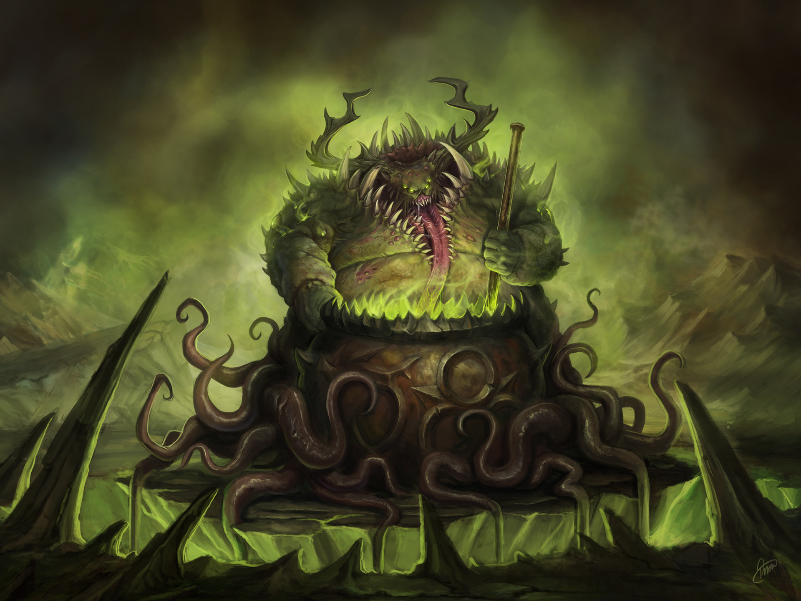

Chaos
Nurgle
About Nurgle
Grandfather Nurgle is the Chaos God of disease, decay, despair and rebirth. Surprisingly jovial, he loves his followers and gifts them with plagues that make them immune to pain and fear of death.
Lore
- Nurgle tends his Garden of Nurgle within the Warp, brewing new plagues in his great cauldron.
- The Death Guard Legion, led by the Daemon Primarch Mortarion, serves Nurgle.
- Nurgle offers comfort to those who despair over their mortality.
- His followers are bloated, rotting and nearly unkillable.
- Nurgle and Tzeentch are bitter rivals, as decay opposes change.
Playstyle & Goals
Slow, tough and grinding attrition warfare. Nurgle forces are extremely durable and spread disease to weaken enemies over time. In a roleplay setting they suit resilient, grim, oddly cheerful or fatalistic characters who embrace endurance.
Goals
- Spread plagues and disease across the galaxy
- Expand the Garden of Nurgle into reality
- Bring despair and decay to the living
- Show mortals the 'gift' of Nurgle's love
Types of Troops
- Death Guard: The Traitor Legion devoted to Nurgle.
- Plague Marines: Rotting Chaos Space Marines with toxic weapons.
- Blightlord Terminators: Elite Terminators of the Death Guard.
- Poxwalkers: Zombie-like victims of the Walking Pox.
- Plaguebearers: Lesser daemons who count every disease in the galaxy.
- Nurglings: Small, mischievous daemon mites.
- Plague Drones: Plaguebearers riding giant Rot Flies.
- Great Unclean Ones: Greater Daemons of Nurgle, massive and jovial.
- Foetid Bloat-drones: Daemon engines that spread plague clouds.